Windows 11 Fluent Design · 首轮设计稿 · 2026-11-03
New7z，文件的收与放。
围绕文件浏览、压缩与解压设计。点击任意图片查看完整分辨率。

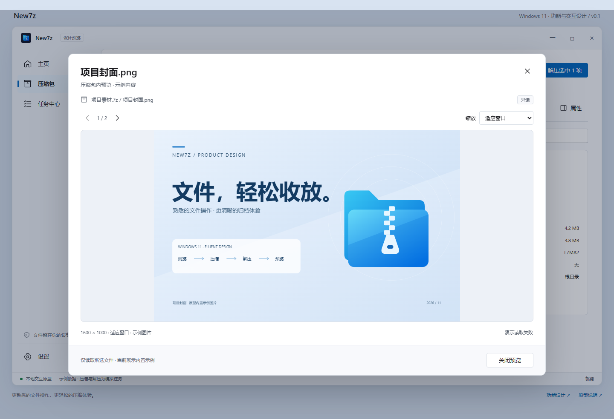
按需查看所选图片，适应窗口或以原始尺寸滚动阅读。

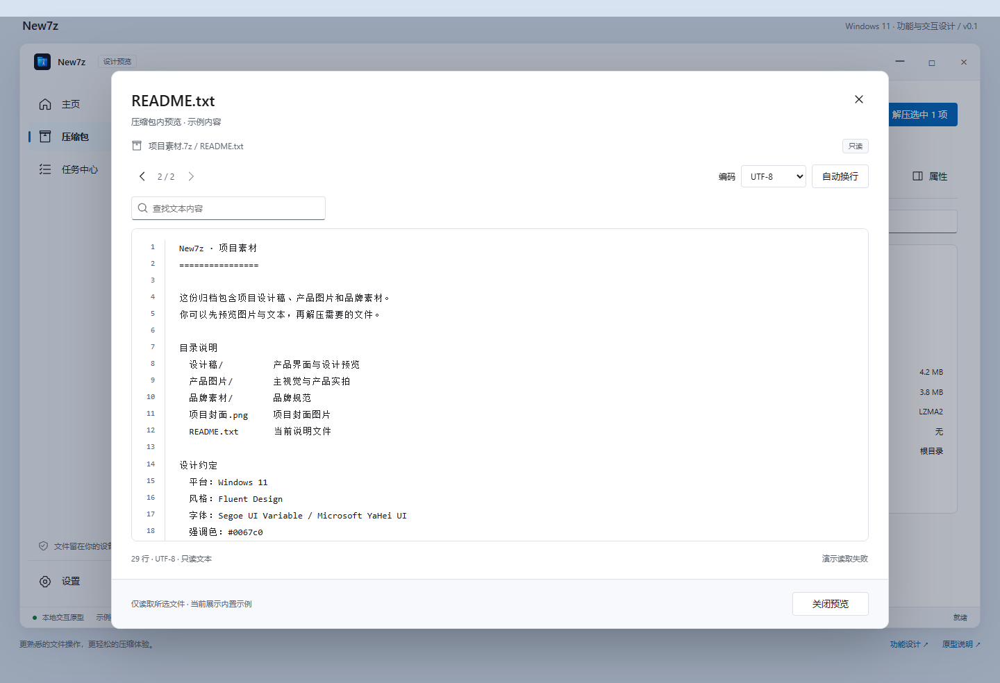
行号、查找、自动换行与编码选择，内容以纯文本安全显示。

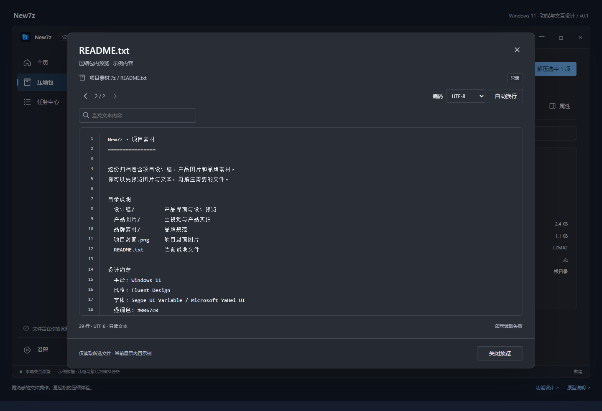
复用窗口与控件规范，保持只读内容清晰。

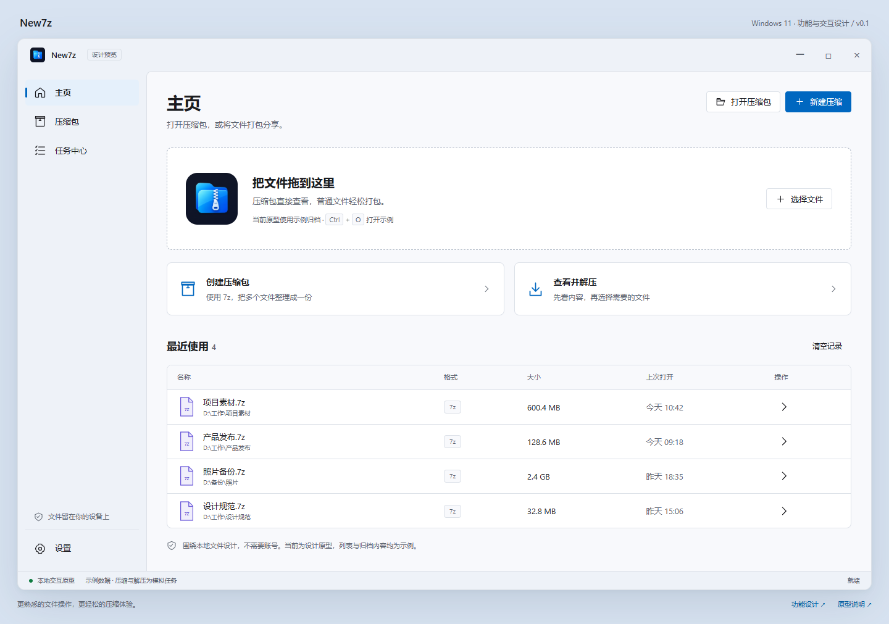
两个核心任务入口，拖放区域与最近记录。

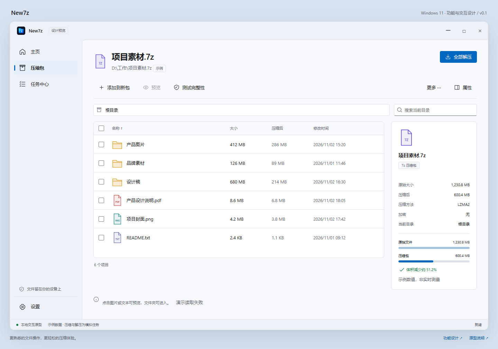
熟悉的文件工作区，体积对照直观呈现归档效果。

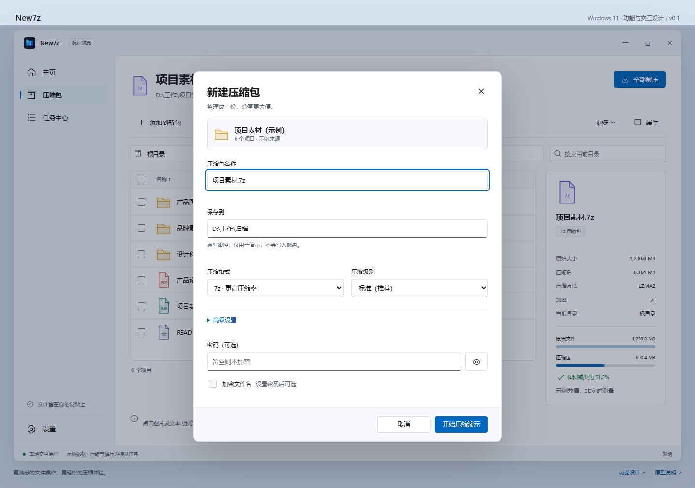
格式、级别、密码；高级选项按需展开。

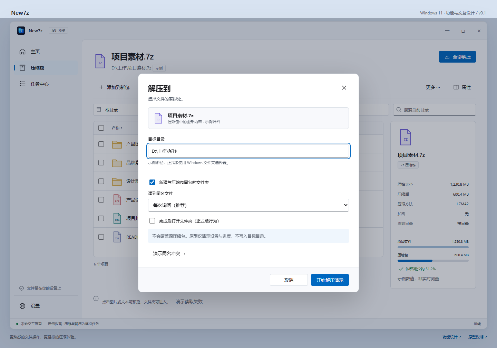
明确输出目录、选中范围与同名文件策略。

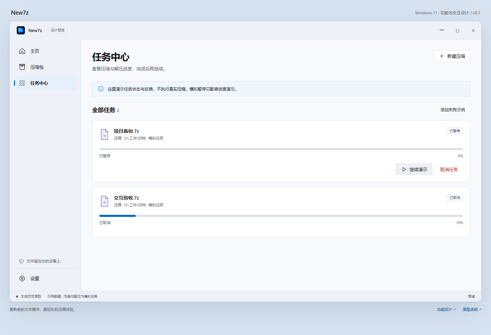
后台任务可追踪，失败配置可修改并重新尝试。

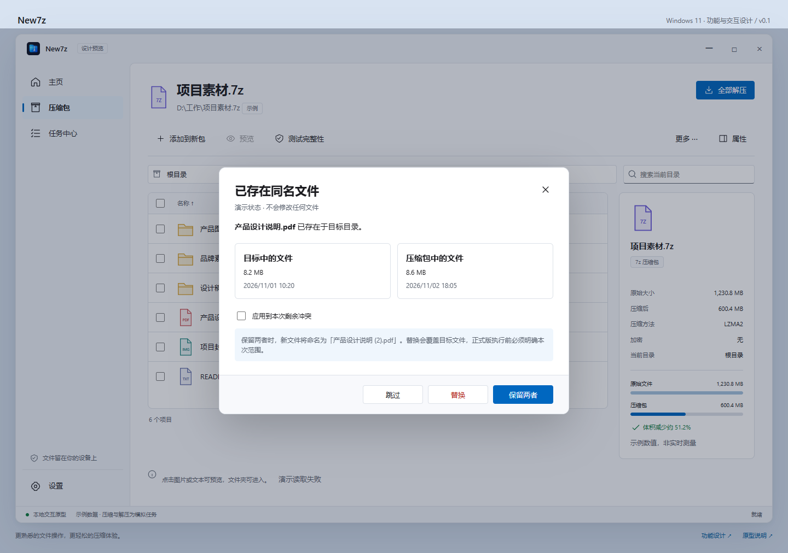
对比新旧文件，默认保留两者，明确覆盖范围。

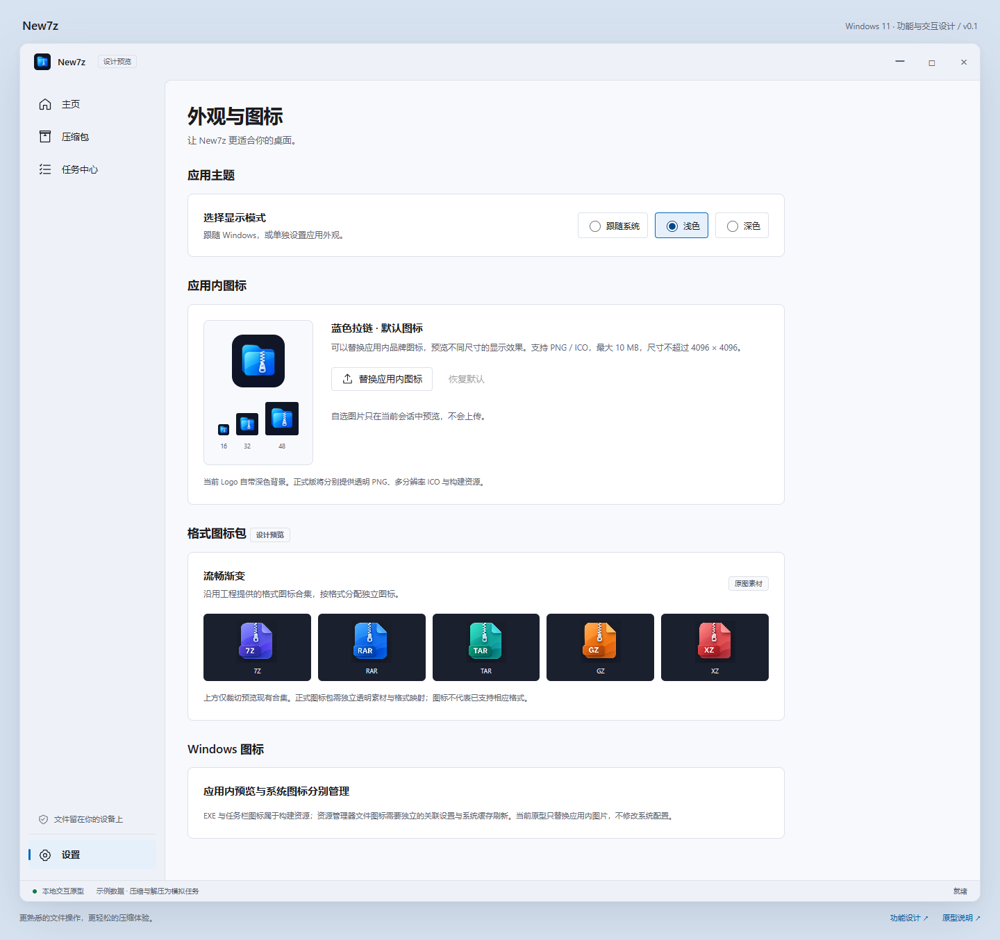
使用工程原始 Logo 与格式图标合集，支持应用内图标替换。

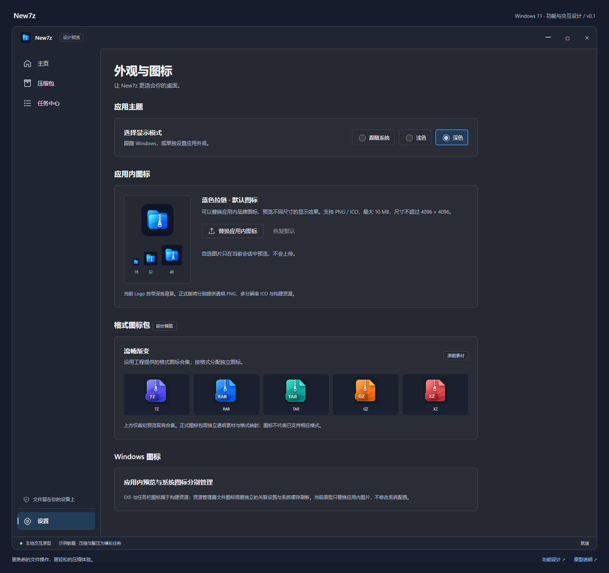
相同布局与操作，独立的暗色语义层级。

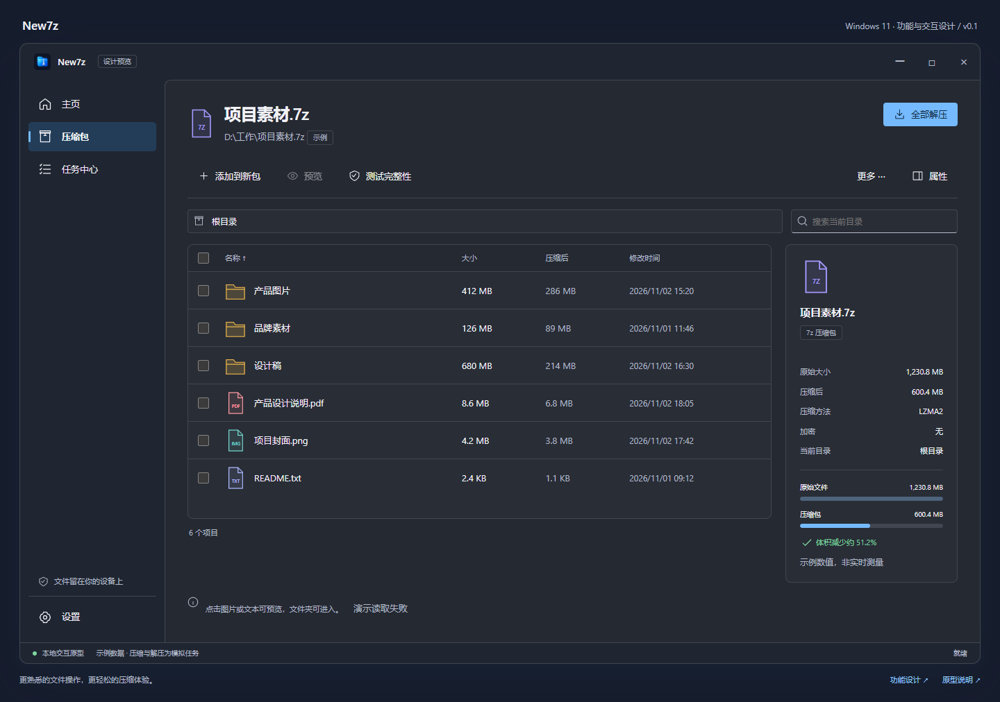
表格、选择、边界和强调色共同适配。

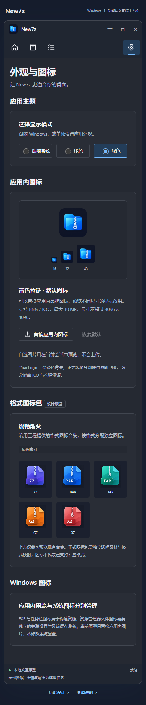
验证布局重排与操作可达；正式产品仍以 Windows 桌面为目标。